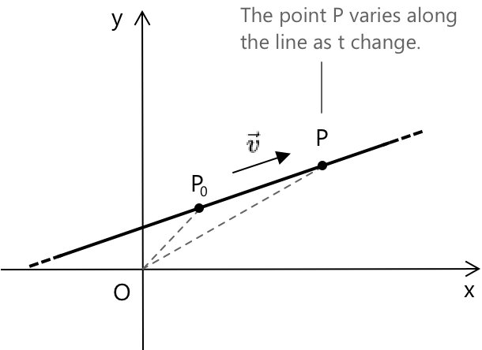

Векторне та параметричне рівняння прямої
Від декартової до векторної форми
Ми бачили, що рівняння прямої може бути записане в декартовій формі, наприклад, у вигляді явного рівняння: \[ y = mx + q \]
де пряма описується за допомогою координат на площині. Однак прямі також можуть бути виражені у векторній формі, використовуючи точки та напрямні вектори для представлення їхнього положення та орієнтації.
Розглянемо спрямований вектор \( \vec{v} \). Пряма, що проходить через точку \( P_0 \) і паралельна \( \vec{v} \), складається з усіх точок \(P\), таких що вектор \(P - P_0 \) паралельний \( \vec{v} \). Векторне рівняння прямої має вигляд:
\[ P – P_0 = t \vec{v} \quad \text{де} \quad t \in \mathbb{R} \]

Тут \( P_0 \) — це фіксована точка на прямій, \( \vec{v} \) — напрямний вектор, а \( t \) — дійсний параметр. Точка \( P \) змінюється вздовж прямої зі зміною \( t \).
Векторне представлення прямої виражає всі її точки в компактній та геометричній формі, що робить напрямок і положення одразу зрозумілими, і слугує природним містком між координатною геометрією та лінійною алгеброю.
Параметрична форма
Тепер зафіксуємо ортонормований базис, тобто систему відліку, де осі перпендикулярні одна одній, а вектори, що їх визначають, мають одиничну довжину. На практиці це означає, що ми працюємо в стандартній декартовій площині, де вісь x співпадає з \( \vec{i} = (1, 0) \), а вісь y — з \( \vec{j} = (0, 1) \).
Представимо фіксовану точку \( P_0 \) та довільну точку \( P \) за допомогою координат:
\[ P_0 = (x_0, y_0) \quad \text{та} \quad P = (x, y) \]
Використовуючи векторне рівняння прямої, отримаємо:
\[ \begin{align} P - P_0 &= (P - O) - (P_0 - O)\\[0.5em] &= (x - x_0)\vec{i} + (y – y_0)\vec{j} \end{align} \]
Тепер врахуємо той факт, що в ортонормованому базисі будь-який вектор може бути розкладений за осями x та y. Іншими словами:
\[ \vec{v} = \text{(зміщення вздовж x)} \cdot \vec{i} + \text{(зміщення вздовж y)} \cdot \vec{j} \]
Отже, доданок \( t\vec{v} \) у правій частині векторного рівняння прямої можна записати як:
\[ \vec{v} = k\vec{i} + h\vec{j} \]
тоді вираз набуває вигляду:
\[ t\vec{v} = t(k\vec{i} + h\vec{j}) \]
Тепер ми можемо переписати векторне рівняння прямої як:
\[ (x – x_0)\vec{i} + (y - y_0)\vec{j} = tk\vec{i} + th\vec{j} \]
Прирівнявши компоненти вздовж напрямків \( \vec{i} \) та \( \vec{j} \), отримаємо наступну систему параметричних рівнянь:
\[ \begin{cases} x = x_0 + kt \\[0.5em] y = y_0 + ht \end{cases} \]
Приклад
Знайдемо параметричні рівняння прямої, що проходить через точки:
\[ P_0 = (2, 1) \quad \text{та} \quad P = (5, 4) \]
Щоб визначити пряму параметрично, нам потрібна точка та напрямок. Оскільки і \( P_0 \), і \( P \) лежать на прямій, ми можемо обчислити напрямний вектор \( \vec{v} \), віднявши їхні координати:
\[ \vec{v} = P - P_0 = (5 - 2, 4 - 1) = (3, 3) \]
Цей вектор вказує нам, як рухатися вздовж прямої, починаючи з \( P_0 \): на кожні 3 одиниці в напрямку x ми рухаємося на 3 одиниці в напрямку y. Тепер використаємо параметричну форму прямої, яка виражає кожну координату як функцію параметра \( t \):
\[ \begin{cases} x = x_0 + kt \\[0.5em] y = y_0 + ht \end{cases} \quad \text{де } t \in \mathbb{R} \]
У нашому випадку маємо:
- Координати \( P_0 \): \( x_0 = 2 \), \( y_0 = 1 \)
- компоненти напрямного вектора \( \vec{v} \): \( k = 3 \), \( h = 3 \)
Підставивши у рівняння, отримаємо:
\( \begin{cases} x = 2 + 3t \\[0.5em] y = 1 + 3t \end{cases} \quad \text{де } t \in \mathbb{R} \)
Ця система описує всі точки на прямій, що проходить через \( (2, 1) \) та \( (5, 4) \). Змінюючи \( t \), ми можемо отримати будь-яку точку вздовж прямої в обох напрямках.
Цей метод працює для будь-яких двох точок: знайшовши напрямний вектор і використовуючи параметричну форму, ми завжди можемо описати всю пряму.
Чим відрізняються векторна та параметрична форми прямої?
Векторна форма описує пряму геометрично: вона будує кожну точку \( P \), починаючи з фіксованої точки \( P_0 \) та рухаючись у напрямку вектора \( \vec{v} \). Вона виглядає так:
\[ P = P_0 + t\vec{v} \]
Параметрична форма бере те саме правило і записує його через координати, одне рівняння для кожної осі, використовуючи компоненти вектора напрямку:
\[ \begin{cases} x = x_0 + kt \\[0.5em] y = y_0 + ht \end{cases} \quad t \in \mathbb{R} \]
Обидві форми описують одну й ту саму множину точок. Векторна форма є компактною та геометричною; параметрична форма є явною та готовою для обчислень. Використовуйте ту, яка більше підходить для задачі, яку ви розв'язуєте, оскільки вони математично ідентичні.